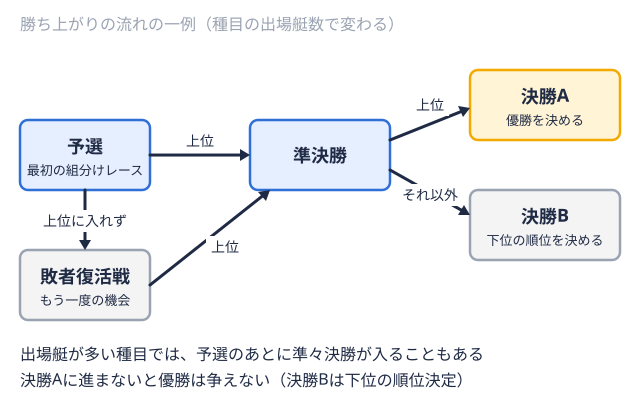
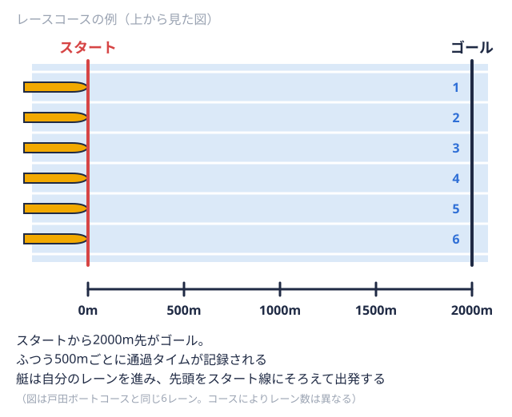
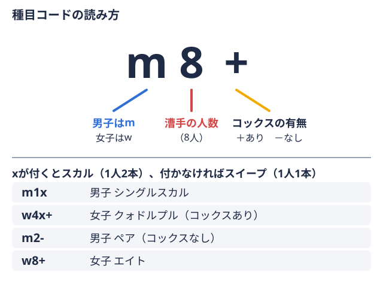

練習 2026-11-26
大学ボート部のレース当日の流れ｜計量・ウォームアップ・発艇までを時系列で解説
初めてのインカレや新人戦を控えて、「レース当日は何時にどこへ行き、何をするのか」が想像できず不安になる部員は多いと思います。ボートは、朝一番の予選最初に行う組分けのレース。上位の艇が次のラウンドに進む。 
この記事では、日本ローイング協会（JARA）が公開している「レースに当たっての審判上の注意」（2026年度全日本大学ローイング選手権）を一次資料に、レース当日の流れを時系列で整理します。あわせて、ある高校ボート部が公開しているウォームアップの組み立て方も、一例として紹介します。ルールの改定そのものはボート競技のルール改正まとめで扱っていますので、本記事は「当日どう動くか」に絞ります。
なお、ここで紹介するのは2026年度の大学選手権向けの注意事項です。大会によって時刻や運用が異なる場合があるため、出場する大会の大会要項と、代表者会議での指示を必ず確認してください。
結論：当日は「前日の確認」「計量」「回漕と練習」「発艇」「フィニッシュ後」の5場面で考える
レース当日の流れは、次の5つの場面に分けると整理しやすくなります。
| 場面 | 主な内容 | 根拠にする資料 |
|---|---|---|
| ① 前日の確認 | 翌日の出漕種目、レース番号、バウ艇の先頭（進む向きの先端）。またその付近に座る漕手のこと。 番号またはレーンレースで各艇に割り当てられる、水上の自分専用の走路。艇ごとに番号が付いている。 番号またはレーンレースで各艇に割り当てられる、水上の自分専用の走路。艇ごとに番号が付いている。 番号、発艇時刻 | 大会の組合せ・タイムスケジュール |
| ② 計量（コックス艇に乗って舵を操作し、漕ぐ人に声で指示を出す人。自分ではオールを持たない。がいる種目） | 最初に出漕するレースの2時間前から1時間前までに1回 | 審判上の注意 3項 |
| ③ 出艇・回漕・練習 | 回漕レーンの航行ルール、故障時の申し出 | 審判上の注意 2・5・6項 |
| ④ 待機水域から発艇 | 呼込み、発艇定刻2分前までの着位置、発艇号令 | 審判上の注意 8項 |
⑤ フィニッシュ漕ぎの終わりの局面。水を押し終えてオールが水面から出る直後。ゴールの意味でも使う。 後 後 | 旗の確認、艇の計量の指示、異議申立 | 審判上の注意 11・13・15項 |
以降、場面ごとに見ていきます。
① 前日：翌日の発艇時刻とレース番号を確認する
ボートの大会は、前日に翌日の組合せと発艇時刻が公表され、部がそれをもとに動きます。たとえば立命館大学漕艇部のブログでは、インカレ1日目の記事に、翌日出漕する種目ごとのレース番号、バウ番号またはレーン番号、ラウンド、発艇時刻が表で掲載されています（立命館大学漕艇部ブログ）。翌日の予定表には、女子ダブルスカル2人乗りの艇。2人とも左右2本のオールを持つ。種目コードは「2x」。 の予選が7:58、男子シングルスカル1人乗りの艇。1人が左右2本のオールを持つ。種目コードは「1x」。の準々決勝出場する艇が多い種目で、準決勝の前に行うラウンド（勝ち上がり戦）。が9:40、男子クォドルプル4人乗りで、全員が左右2本のオールを持つ艇。種目コードは「4x」。の準々決勝が15:38というように、種目ごとに時刻が大きく離れる様子もうかがえます。
の予選が7:58、男子シングルスカル1人乗りの艇。1人が左右2本のオールを持つ。種目コードは「1x」。の準々決勝出場する艇が多い種目で、準決勝の前に行うラウンド（勝ち上がり戦）。が9:40、男子クォドルプル4人乗りで、全員が左右2本のオールを持つ艇。種目コードは「4x」。の準々決勝が15:38というように、種目ごとに時刻が大きく離れる様子もうかがえます。
大会全体の時間割は、JARAの大会ページで公開されます。2025年の第52回大会（2025年9月3日〜7日、戸田ボートコース）のページでは、女子シングルスカルの予選が7:00に始まり、準決勝決勝に進む艇を決めるラウンド。上位の艇が優勝を争う決勝に進む。は8:54から男子エイト漕ぐ人8人と舵を取る人1人が乗る最大級の艇。1人1本のオールを持つ。 の16:28まで、決勝は女子舵手つき舵を取る専任の人が艇に乗る種目。種目コードでは「+」で表す。の7:24から男子エイトA決勝の12:24までと、時刻付きで掲載されています（第52回大会ページ）。2026年の第53回大会（2026年8月26日〜30日）も、同じく戸田ボートコースで開催され、全レースがYouTubeで配信されました（第53回大会ページ）。
ここで注意したいのは、時間割が変更される場合があることです。2025年大会のページの更新情報には、荒天に伴いタイムスケジュールを更新したと掲載されています。前日夜に確認した時刻が当日の朝に変わっている可能性があるため、当日の朝にもう一度、公式の時間割を見る習慣をつけておくと安心です。
前日にやっておきたいことを、一般的な準備として挙げておきます。
- 発艇時刻から逆算して、起床・朝食・集合・計量・出艇の時刻をクルー全員で共有する
- ユニフォーム、帽子、予備の着替え、飲み物、補食を確認する
- 艇と備品（オール、シューズ、ヒールロープ、フットストレッチャー）の最終点検を、マネージャーや担当者と一緒に行う
- 大会要項と審判上の注意の読み合わせを、代表者会議の前に済ませておく
戸田ボートコースの特徴や観戦のしかたは戸田ボートコースの観戦ガイド、インカレ全体の見どころはインカレボートの観戦ガイドにまとめています。
② 計量：コックスは出漕の2〜1時間前
コックス（舵手）がいる種目では、当日の最初の関門が計量です。審判上の注意（2026年度全日本大学ローイング選手権）には、次のように書かれています。
- 計量は、ユニフォームと、装着が認められているパーソナルアイテムだけで行う
- 舵手の体重は、計量時に許可されたものを含めて、男子種目55kg以上、女子種目50kg以上とする。満たない場合は、最大15kgのデッドウェイトを艇内の舵手に最も近い場所に置く。携行しないで出漕するとレッドカードで除外になる
- 計量は、レースのある日に必ず1回、最初に出漕するレースの2時間前から1時間前までに、指定の場所で行う。この時間内に計量しなかったクルーは失格になる
- 計量所での水分摂取は禁止。予備計量は1回限りで、計量担当者に先に申し出る
見落としやすいのは、計量が「最初に出漕するレースの2時間前から1時間前まで」と、時間に幅があることです。朝7時台にレースがある日は、計量は5時台から6時台になります。その時刻から逆算して起床や移動を決める必要があるため、前日のうちに計算しておくとよいでしょう。コックスの役割や体重の考え方は大学ボート部のコックスとはで紹介しています。
軽量級（ライトウェイト）の種目の計量や減量の考え方は、軽量級と減量の解説をご覧ください。計量直前の急激な体重調整は体への負担が大きくなる場合があるため、日々の管理が前提になります。
③ 出艇から回漕、練習エリアまで：事故を防ぐ航行ルール
計量を終えたら、艇を準備して出艇します。審判上の注意で繰り返し強調されているのが、安全と航行ルールです。
> レース前の練習時に他艇と接触・衝突して、艇の故障により出漕できなくなるクルーが時々見受けられる。往々にして航行ルールが守られていないことが原因である。（審判上の注意 2項の趣旨）
具体的には、次の点が示されています。
- 回漕レーンと緩衝レーンは練習用の水域ではない。すぐに止まれるスピードで進み、後続のクルーの回漕を妨げない
- 戸田のように回漕レーンとコースが隣接している場合、レースが近づいたら、先頭のレース艇の100m手前で必ず停止し、最後尾のレース艇が通過するまで待つ
- 練習エリアやクールダウンエリアの航行ルールに違反すると、イエローカードの対象になる
- 回漕中や練習中にレース艇と接触したり妨害したりしたクルーは、イエローカードの対象になり、重大な場合はレッドカードで除外される
カードの意味も確認しておきます。イエローカードは警告で、同一ラウンド内で2回受けるとレッドカードの警告になります。イエローカードは前のラウンドの終了から次のラウンドの終了まで有効で、レースが延期または再レースになった場合にも適用されます。レッドカードの警告を受けると除外となり、その後のレースには出漕できません。
艇の故障が起きたとき
出艇前や回漕中に艇の故障が起き、発艇定刻に間に合わないと思われる場合は、最寄りの審判員に申し出ることになっています。ただし、発艇定刻の2分前までに所定の位置に着けないと、イエローカードの警告を受けます。修理が長引く場合は、そのクルーを外してレースを行うことがあり、そのクルーはDNS（棄権）扱いになります。
つまり、出艇前の艇の点検や、普段からの整備がレースの前提になります。艇の手入れについてはシェル艇の手入れ方法を、水上での事故への備えは転覆時の対処をご覧ください。
ウォームアップの組み立て方：ある高校ボート部の公開例
では、水上でのウォームアップは何を、どの順で行えばよいのでしょうか。大会規則にウォームアップの内容を定めた規定は見当たらないため、ここでは、ある高校ボート部が公開している試合前アップの解説を一例として紹介します（高校ボート部の試合前アップ解説）。大学の部では種目やクルーの人数が異なる場合があるため、あくまで組み立て方の参考としてお読みください。
同ページでは、準備を身体面（心肺や筋肉の状態、クルーの漕ぎのイメージの統一）と精神面（試合の状況に体を慣らすこと）の2つに分けています。また、ボートのレースは3分半から4分半ほどで、後から取り返す時間が少ないため、ウォームアップが特に重要だと述べています。
紹介されている流れは次のとおりです。
- 陸上ウォームアップ：準備体操やジョグで、先に体を動かしておく
- 水上の技術練習：スタートへ向かう回漕では、普段と逆向きに漕ぐ感覚になる点に注意する。回漕は原則として止まれない
- 両舷での技術練習：練習で課題にしてきたツーポイントやノンフェザーなどを使い、早い段階で漕ぎのイメージをそろえる
- 両舷パドル：レースプランで考えたリズムを早めに表現できるようにする。連続で多く漕ぐと乳酸がたまるため、短い本数で再現する。同ページはこの時間を、アップの中で最も重要と位置づけている
- スタート練習：負荷が大きいため、本数は少なめにし、1本から徐々に増やす
- 流し：止まると体が冷えるため、動きを止めない
- 発艇位置への着岸：自分の艇が呼ばれたら、自分のレーンに入り、バックローで艇尾をボートホルダーに預け、服装を整えて心の準備をする
同ページが示す時間配分の例は、発艇の50分前に回漕を始め、35分前に1,000m地点を通過して両舷パドルに入り、25分前にスタート練習を始め、15分前までに終えて流し、10分前に発艇位置付近で待機、6分前に審判に呼ばれ、3分前に発艇位置に着く、というものです。
このとおりに動くことが正解というわけではありません。水域の広さ、前後のレースの間隔、風向き、クルーの人数や経験によって、適した時間配分は変わる場合があります。大切なのは、練習の段階から同じ順序でウォームアップを繰り返し、本番でも再現できるようにしておくことだと考えられます。
④ 待機水域から発艇まで：呼込みと発艇号令
練習を終えたら、待機水域へ向かい、発艇の手順に入ります。審判上の注意の8項には、次のように書かれています。
- 次に出漕するクルーは、待機水域で、発艇員からレースで使うレーンを割り当てられる。待機水域以外で待ったり、呼込まれていないのに勝手に競漕水域に入ったりしてはならない
- 割り当てられたレーンに入った後は、自分のレーンだけで練習できる。他のレーンに入ってはならない
- 出漕するクルーは、発艇定刻の2分前までに、所定の発艇位置（ステイクボード・ポンツーン）に着いていなければならない。違反するとイエローカードの警告を受ける
発艇の号令は、発艇合図信号により、通常は次の順で行われます。
ロールコール → 「アテンション」 → 赤色灯 → 緑色灯とブザー音
注意書きには、機器の不具合でブザー音が聞こえない場合もあるため、緑色灯が点灯したらスタートすること、とあります。クイックスタートの場合は、2分前コールの後に発艇員から通達があり、手順は「オールクルーズ → アテンション → 赤色灯 → 緑色灯とブザー音」となります。信号機が故障した場合は、旗と号令で行います。フォルススタートなどでレースを止める場合は、旗と鐘で知らせるので止まる、とされています。
つまり、ブザーだけに頼らず、灯火も見ておくことが求められています。信号の確認と声かけを、クルー内でどう分担するかは、事前に決めておくと慌てずに済みます。
レース中に知っておきたいこと
レース中の注意として、審判上の注意の9〜10項には次のような項目があります。
- 自分のレーンを外れ、他艇に接触・妨害する危険のあるクルーに対し、主審が白旗を掲げてクルー名を呼び、警告することがある
- 進行方向に障害物があるなどの場合、主審から操舵の指示が出ることがある
- いかなるクルーも、定員を欠いて出漕することはできない
- 不可抗力で漕手オールを持って艇を前に進める選手。舵を取るだけの人は含めない。が落水し、乗艇艇に実際に乗り、水上で漕ぐこと。陸上でのトレーニングと区別して使う。できずにフィニッシュラインに到達した場合などは、着順が認められる。漕手が故意に飛び込んだ場合や、舵手を欠いた場合は、着順が認められずレッドカードになる
- 艇が転覆した場合に漕手がすぐに離脱できるよう、シューズは片手の一動作で脱げる仕組みにし、ヒールロープを使う場合は踵が水平以上にならないよう結んでおく。違反すると失格までの罰則がある
シューズやヒールロープの確認は、本番の朝に慌てて行うものではなく、普段の練習から習慣にしておくことが安全の面でも重要です。
また、無線通信機器の扱いも重要です。艇内にタイム、ストロークレート、艇速や加速度、心拍数の4種類の許可データを収集する機器を持ち込むことは許可されていますが、レース中は、クルーと艇の外部との間で、電気的・電子的な手段による交信やデータの送受信は一切許されず、使用した場合は失格になります。岸から拡声器や無線で指示を出すことも禁止されています。
⑤ フィニッシュ後：旗を待ち、艇の計量の指示を確認する
レースが終わっても、すぐに動いてよいわけではありません。審判上の注意の11項によると、フィニッシュラインを通過したクルーは、主審艇が旗を揚げるまでフィニッシュライン付近で待機します。
- 白旗：レースに問題がなく終了したことを示す
- 赤旗：レースに何らかの疑義があることを示す。主審から指示があるまで、その場にとどまって待つ
ブザー音が正常に鳴らない場合もあるため、クルー自身がフィニッシュラインを確認して漕ぎ終えるよう、注意が書かれています。
艇の計量を指示された場合
艇には種目ごとの最小重量があり（1xが14kg、2xと2-2人乗りで、1人1本のオールを持つ艇。舵を取る人が乗る型もある。が27kg、2+が32kg、4xが52kg、4-が50kg、4+が51kg、4x+が53kg、8+が96kg）、主審は任意に、着順に関係なく艇の計量を指示できます。指示を受けたクルーは、クールダウンを済ませた後（任意）に、計量所へ向かいます。
次の点には注意が必要です。
- 計量の結果、重量不足が判明すると、そのレースは最下位（BUW）となる。大会中に2度目の重量不足が判明すると失格
- 計量の指示を受けてから計量所へ行くまでの間に、岸や他の台船（給水ポンツーンを除く）に艇を着けると、重量にかかわらず最下位になる
- 艇内に水を入れるなど、故意に計量に影響を与える行為をした場合も最下位になる
異議があるとき
審判の判断に疑問がある場合、異議申立は、レース直後、または審判から処分を受けた時点でだけ、その審判に申し出ることができます。レースに関する異議は、主審が白旗を掲げる前に申し出る必要があります。レース終了後のクールダウンや、次のラウンドまでの練習中の処分への異議は、次のラウンドで桟橋を出艇するまでに申し立てます。異議が棄却された場合などは、所属団体の代表者の署名がある書面で、不服申立を行う仕組みもあります。
時間が限られているため、異議を出すかどうかは、その場で主将・コックス・コーチなどが相談して判断することになります。事前に、誰が判断するかを決めておくと、慌てずに済みます。
当日のコンディショニング：食事・水分・睡眠
当日の食事や水分補給については、ボートに特化した公的なガイドは確認できませんでした。そこで、一般的なスポーツ栄養の考え方として、大塚製薬のウェブサイトの解説を紹介します（試合前・当日の食べ方｜大塚製薬）。
- 試合の3〜4時間前までに食事を終えておくのが理想とされている
- 試合の1〜2時間前には、エネルギー切れを防ぐため、ゼリー飲料などの消化のよい軽食をとる
- 糖質を中心にした、消化がよく、普段から食べ慣れたものがよい
- 脂質の多い食事や、食物繊維の多い生野菜・海藻・きのこ類、生ものは避けたほうがよいとされている
- 試合前にイオン飲料などで、汗で失う水分とミネラルを補給する
ただし、朝7時台にレースがある場合、計量が5時台になることもあり、3〜4時間前に食事を終えるのは現実的でない場面があります。そのようなときは、前日の夕食と就寝前の食事、当日朝の軽食で調整するなど、部のコーチやトレーナーと相談しておくとよいでしょう。大切なのは、本番で初めて試す食品を避け、合宿や練習試合の段階で自分に合う食事のタイミングを確かめておくことです。日頃の食事は大学ボート部の食事メニュー、睡眠は睡眠とパフォーマンス、夏の大会での暑さ対策は熱中症対策も参考にしてください。
マネージャーや控えの部員にできること
当日の流れは、漕手やコックスだけで回るものではありません。マネージャーや控えの部員が担うことの例を挙げます。
- 前日夜と当日朝に、公式の時間割と変更の有無を確認して、クルーに共有する
- 計量の時刻、集合時刻、出艇時刻を、レースごとに一覧にする
- 飲み物、補食、冷却用品、着替え、タオルなどを準備する。立命館大学漕艇部のブログでは、OB・OGや保護者から、ゼリー飲料、冷却タオル、ジュースなどの差し入れがあったことが紹介されている
- レース後の結果と、翌日の組合せ・発艇時刻を整理して、部内に共有する
マネージャーの仕事の全体像はボート部マネージャーの仕事で紹介しています。
当日の持ち物と確認事項チェックリスト
最後に、本記事の内容を、当日の確認リストにまとめます。大会ごとの要項に合わせて、各部で調整してください。
- □ 前日夜と当日朝に、公式の時間割・発艇時刻・レース番号・バウ番号またはレーン番号を確認した
- □ （コックスのいる種目）計量の時間帯（最初のレースの2時間前〜1時間前）に間に合う
- □ （コックスの体重が基準に満たない場合）デッドウェイトを用意し、艇内のコックスに最も近い場所に置く
- □ ユニフォームがクルー内で統一されている（アンダーシャツなどの色や柄も含む）
- □ シューズ、ヒールロープ、フットストレッチャーの安全確認をした
- □ 回漕レーンでは、すぐに止まれる速度で進む。レースが近づいたら先頭艇の100m手前で止まる
- □ 発艇定刻の2分前までに、発艇位置に着く
- □ 発艇は、ブザーだけでなく緑色灯も確認する
- □ フィニッシュ後は、主審艇の旗が揚がるまで待機する
- □ 艇の計量を指示された場合は、他の台船に着けずに計量所へ向かう
- □ 当日の食事、水分、補食の予定を決めている
まとめ
- レース当日の流れは、前日の確認、計量、出艇・回漕・練習、発艇、フィニッシュ後の5場面で整理できる
- コックスの計量は、最初に出漕するレースの2時間前から1時間前までに1回。時間内に行わないと失格になる
- 発艇定刻の2分前までに発艇位置に着かないと、イエローカードの警告を受ける。発艇号令では、ブザーだけでなく緑色灯も確認する
- フィニッシュ後は、主審艇の旗を待つ。艇の計量を指示されたら、他の台船に艇を着けずに計量所へ向かう
- ウォームアップの順序や時間配分は、高校ボート部の公開例などを参考に、練習の段階から同じ手順を繰り返し、本番で再現できるようにしておく
当日の運用は大会ごとに異なる場合があります。必ず、出場する大会の大会要項、審判上の注意、代表者会議での指示を確認してください。直近の大会の結果は2025年度の結果、種目別の歴代優勝校は男子エイトの種目ページで確認できます。タイムの目安は大学ボートの2000mタイム目安も参考になります。
出典
- 日本ローイング協会「レースに当たっての審判上の注意（2026年度全日本大学ローイング選手権）」
- 日本ローイング協会「第53回全日本大学ローイング選手権大会」
- 日本ローイング協会「第52回全日本大学ローイング選手権大会」
- 立命館大学漕艇部「インカレ1日目（ブログ）」
- 高校ボート部「試合前アップ」
- 大塚製薬「試合前・当日の食べ方」
この部活・競技を応援したい方へ
取材してほしい部活を募集中
部活を続けながら、就活も進めたい方へ
体育会の学生のための就活相談です。無料で、メールアドレス・学年・所属の入力だけで始められます。